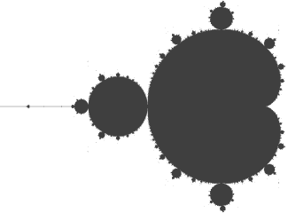

DAS MORPHENDE KONZEPT
* Fraktale Welten *
Das Apfelmännchen von Benoît Mandelbrot
Die faszinierende Welt der Mathematik

 Benoît B. Mandelbrot (* 20. November 1924 in Warschau; † 14. Oktober 2010 in Cambridge, Massachusetts) war ein französisch-US-amerikanischer Mathematiker, welcher Beiträge zu einem breiten Spektrum mathematischer Probleme leistete und insbesondere in der theoretischen Physik, der Finanzmathematik und der Chaosforschung beeindruckende Erkenntnisse entwickelte. Am bekanntesten aber wurde er als Vater der fraktalen Geometrie. Er beschrieb die Mandelbrot-Menge und prägte den Begriff „fraktal“. Mandelbrot trug selbst stark zur Popularisierung seiner Arbeiten bei, indem er Bücher schrieb und Vorlesungen hielt, die für die Allgemeinheit bestimmt waren.
Überall in der Natur finden sich solche Strukturen und selbstähnlichen Formen wieder, etwa bei Wolken und Küstenlinien - oder auch bei den immer feiner werdenden Verästelungen von Pflanzen.
Benoît B. Mandelbrot (* 20. November 1924 in Warschau; † 14. Oktober 2010 in Cambridge, Massachusetts) war ein französisch-US-amerikanischer Mathematiker, welcher Beiträge zu einem breiten Spektrum mathematischer Probleme leistete und insbesondere in der theoretischen Physik, der Finanzmathematik und der Chaosforschung beeindruckende Erkenntnisse entwickelte. Am bekanntesten aber wurde er als Vater der fraktalen Geometrie. Er beschrieb die Mandelbrot-Menge und prägte den Begriff „fraktal“. Mandelbrot trug selbst stark zur Popularisierung seiner Arbeiten bei, indem er Bücher schrieb und Vorlesungen hielt, die für die Allgemeinheit bestimmt waren.
Überall in der Natur finden sich solche Strukturen und selbstähnlichen Formen wieder, etwa bei Wolken und Küstenlinien - oder auch bei den immer feiner werdenden Verästelungen von Pflanzen.
Auf dieser Seite habe ich ein kleines Beispiel veranschaulicht, das diese 'Welten in Welten in Welten' offenbart, indem du in die Struktur hinein zoomen kannst. Habe viel Freude daran!
Double click on a specific point in the image to zoom in